Key Takeaways
- Defines the maximum SMB dialect clients can negotiate, controlling protocol ceiling.
- Helps simulate legacy conditions by capping the maximum dialect.
- Useful when certain apps/devices fail with newer dialects.
- Lock down to a specific version if required.
Hey, let’s learn about Configure SMB Protocol for Windows File Printer and Network Sharing in Microsoft Intune. Configuring SMB protocol for Windows file, printer, and network sharing involves enabling the correct firewall rules, ensuring SMB (TCP 445) traffic is allowed, and deploying scripts or policies to enforce secure sharing. This policy ensures devices can access shared folders and printers while maintaining compliance and security.
Table of Contents
What are the advantages of this policy?
Configuring the SMB protocol for Windows file, printer, and network sharing via Microsoft Intune brings several advantages:
1. Intune allows IT admins to push SMB configurations across all managed devices.
2. Admins can prove that secure sharing policies are consistently applied.
3. Ensures hybrid environments remain functional.
4. Prevents common SMB exploits by requiring encryption and limiting exposure.
Configure SMB Protocol for Windows File Printer and Network Sharing in Microsoft Intune
The Max Smb2 Dialect policy defines the highest SMB protocol version that windows can use when communicating with file servers. By setting a maximum supported SMB dialect, administrators can control protocol compatibility while ensuring devices use secure and modern SMB versions for file printer and network sharing. this helps to improve security and simplify network management.
How to Create the Max Smb2 Dialect Policy
To create the policy, first you must sign-in to the Microsoft Intune admin center. Go to devices>configuration then click on the create button. To create a new policy, select new policy option.
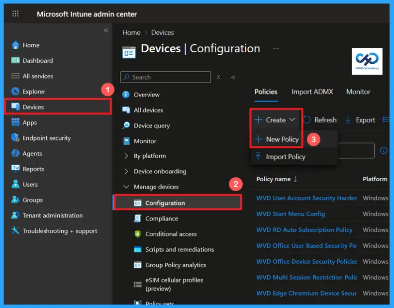
Create Profile of Max Smb2 Dialect Policy
Choose new policy to begin the creation of a policy profile. In this create a profile window, select windows 10 and later as the platform and settings catalog as the profile type. After selecting these options, click create to proceed with the policy configuration.
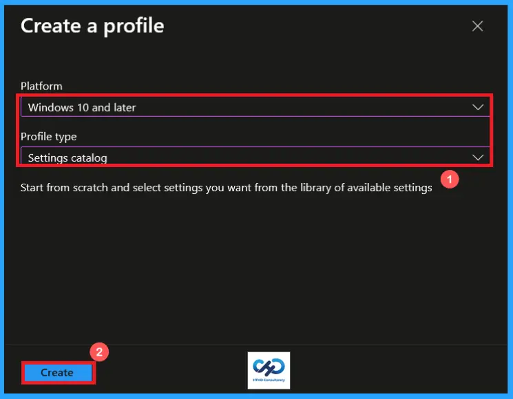
Basic Tab of Max Smb2 Dialect Policy
On the basic page, enter a meaningful Name and an optional Description to clearly identify the policy. The name should reflect the core purpose of the configuration. Here I provided a name as Max Smb2 Dialect and description as Controls the maximum version of SMB protocol. Then click on next to continue.
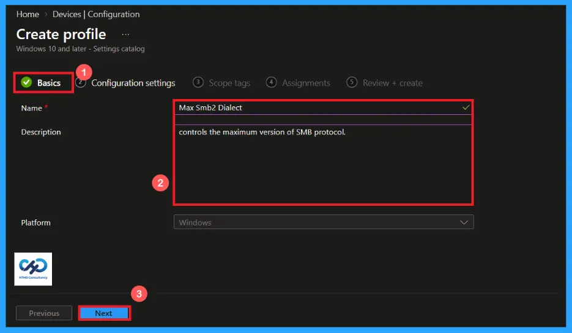
Configuration Settings of Max Smb2 Dialect Policy
On the configuration settings, click on +Add settings to open the settings picker. Search for max smb2 dialect or browser to the Lanman server category to locate the setting. Select the required policy, add to the profile and continue with the configuration.
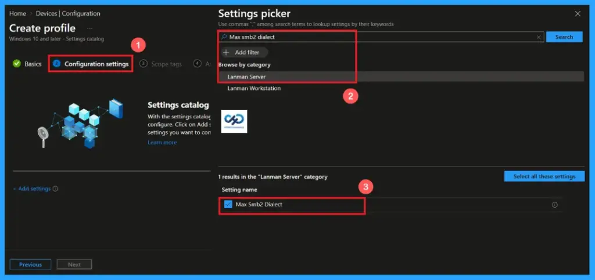
Default Option of Max Smb2 Dialect Policy
SMB 3.1.1 is the default value provided by the policy. Best for modern windows 10 or 11 and windows server environments. This is the latest and most secure SMB protocol version supported by windows. It is recommended to keep the default value unless compatibility with older system requires an earlier SMB version.
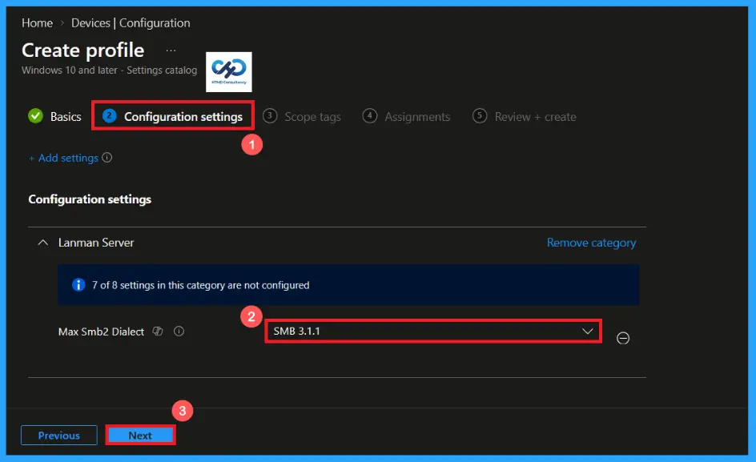
Other Options Provided by The Max Smb2 Dialect Policy
The policy providing more options, each option supports different features, security improvements and different performance enhancements. The maximum SMB version that clients and servers can negotiate, it does not disable SMB 1.0 if SMB 1 is still installed and enabled on the device.
| Options | Explanation |
|---|---|
| SMB 2.0.2 | It offers improved performance over SMB 1.0 but lacks many modern security features. |
| SMB 2.1.0 | Adds better performance, power efficiency and file locking improvements. |
| SMB 3.0.0 | Adds major security features such as SMB Encryption, SMB multichannel and SMB direct (RDMA). |
| SMB 3.0.2 | It improves the reliability, performance and stability of SMB 3.0 |
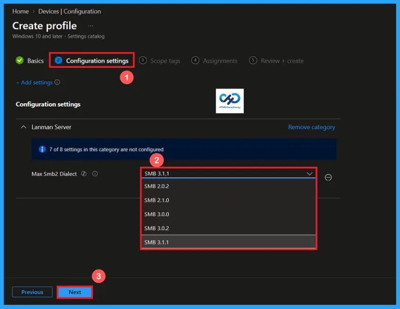
Select Scope Tag
A scope tag in Intune helps to organize and manage Intune resources based on administrative roles. Adding a scope tag is not mandatory. If needed, select the appropriate scope tag by clicking the select scope tags button. Here I selected the London scope tag. After selecting the scope tag, click on next to continue.
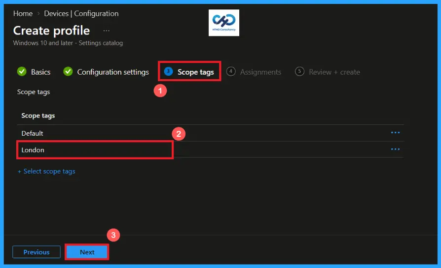
Add Groups using Assignment Tab
Use the assignment section to specify the users or devices that will receive the policy. Click on Add groups to add a group to the policy. Then search for the appropriate group, here I selected the HTMD – Test policy. After providing the group, click on next to continue.

Verify and Create the Policy
In the Review + create step, verify all configured policy settings to ensure they are accurate and meet your requirements. If any changes are needed, use the previous option to make changes. Then click on create button to deploy the policy. A confirmation notification will appear, indicating that the Max Smb2 Dialect Policy has been created successfully.
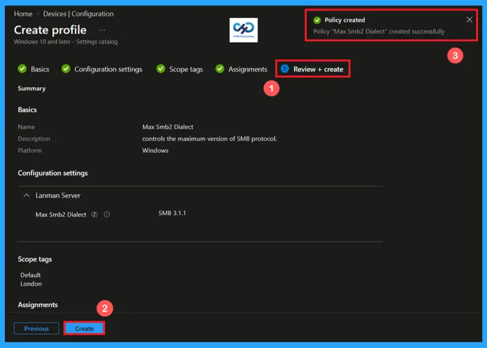
Device and User Check-in Status
After the policy has been assigned, monitor its deployment status from the device and user check-in status page in the Intune admin center. Check the status has shown succeeded (1), performing a manual sync from the company portal can help device to receive and apply the policy more quickly.
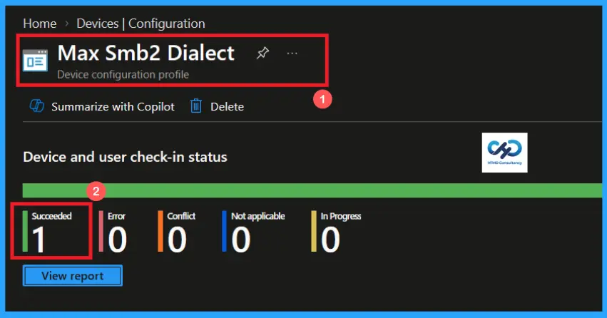
Client-side Verification of The Max Smb2 Dialect Policy
To confirm that the policy has been successfully applied on a client device, open Event viewer and navigate to Applications and services logs> Microsoft> Windows> Device management enterprise diagnostic provider> Admin. Use the filter current login option to locate Event Id 813.
MDM PolicyManager: Set policy int, Policy: (MaxSmb2Dialect), Area: (LanmanServer),
EnrollmentID requesting merge: (EB427D85-802F-46D9-A3E2-D5B414587F63), Current User:
(Device), Int: (0x311), Enrollment Type: (0x6), Scope: (0x0).
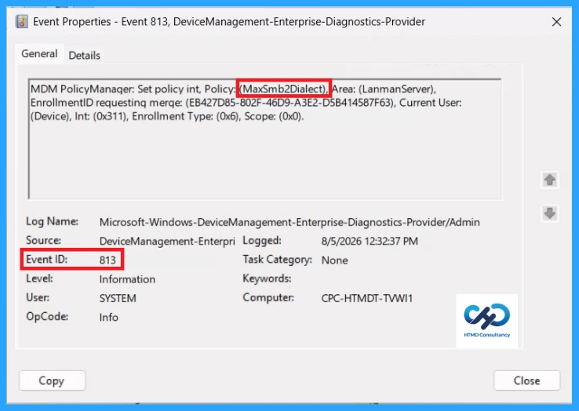
Configuration Service Provider (CSP)
The Configuration Service Provider (CSP) defines how windows configuration settings are managed through Microsoft Intune. Ensuring consistent policy deployment across Windows 10 and 11 devices. It explains what each policy does, what settings or values can be used, and how it connects to older Group Policy settings (Group Policy Mapping details).
Description framework properties: The following table below shows the description framework properties of Max Smb2 Dialect Policy.
| Property name | Property value |
|---|---|
| Format | int |
| Access Type | Add, Delete, Get, Replace |
| Default Value | 785 |
Allowed values: It defines the supported configuration options available for the Max Smb2 Dialect Policy
- 514 – SMB 2.0.2.
- 528 – SMB 2.1.0.
- 768 – SMB 3.0.0.
- 770 – SMB 3.0.2.
- 785 (Default) – SMB 3.1.1.
Group policy mapping: Group policy mapping shows the equivalent Group Policy Settings for an Intune policy.
| Name | value |
|---|---|
| name | Pol_MaxSmb2Dialect |
| Friendly Name | Mandate the maximum version of SMB |
| Location | Computer Configuration |
| Path | Network > Lanman Server |
| Registry Key Name | Software\Policies\Microsoft\Windows\LanmanServer |
| ADMX File Name | LanmanServer.admx |
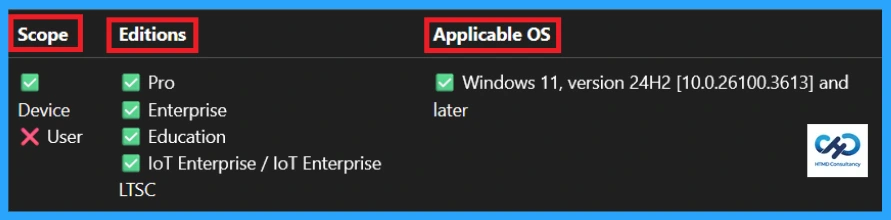
How to Remove the Assigned Group from Max Smb2 Dialect Policy
You can easily remove an assigned group from a policy, go to the devices>configuration and search for the Max Smb2 Dialect policy. Click on the Edit button on the Assignment tab then click on Remove button on this section to remove the policy and click Review + Save after making the change.
For detailed information, you can refer to our previous post – Learn How to Delete or Remove App Assignment from Intune using by Step-by-Step Guide.
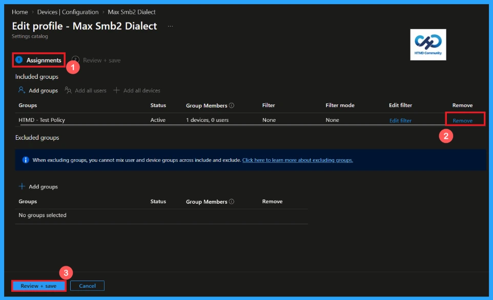
How to Delete the Max Smb2 Dialect Policy from Intune Portal
You can delete a policy if needed. Open the Microsoft Intune admin center and search for the Max Smb2 Dialect Policy from configuration section. After finding the policy, click on the 3-dot menu next to it and tap the Delete option.
For detailed information, you can refer to our previous post – Learn How to Delete or Remove App Assignment from Intune using by Step-by-Step Guide.
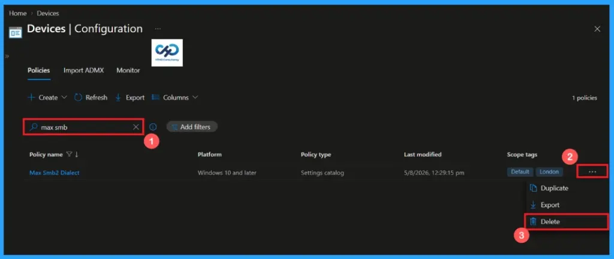
Need Further Assistance or Have Technical Questions?
Join the LinkedIn Page and Telegram group to get the latest step-by-step guides and news updates. Join our Meetup Page to participate in User group meetings. Also, Join the WhatsApp Community and WhatsApp Channel to get the latest news on Microsoft Technologies. We are there on Reddit as well.
Author
Anoop C Nair is Workplace Technology solution architect with 25+ years of experience in global enterprise organizations such as JP Morgan, Capgemini, etc. He is Microsoft Certified Trainer. Microsoft MVP from 2015 onwards for consecutive 11 years! He also conducts Intune and modern workplace tech training for enterprise organizations. He is Blogger, Speaker, and Founder of HTMD Community and HTMD Conference. His focus is on Device Management technologies such as Intune, Windows, Cloud PC. He writes about technologies like Intune, SCCM, Windows, Cloud PC, Windows, Entra, Microsoft Security.